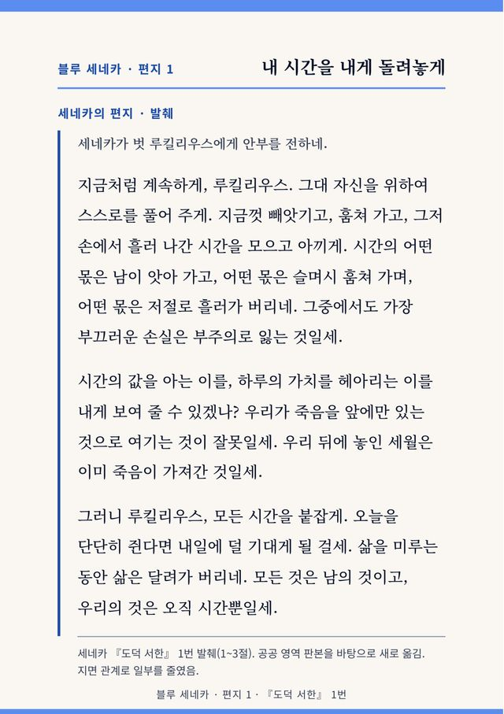
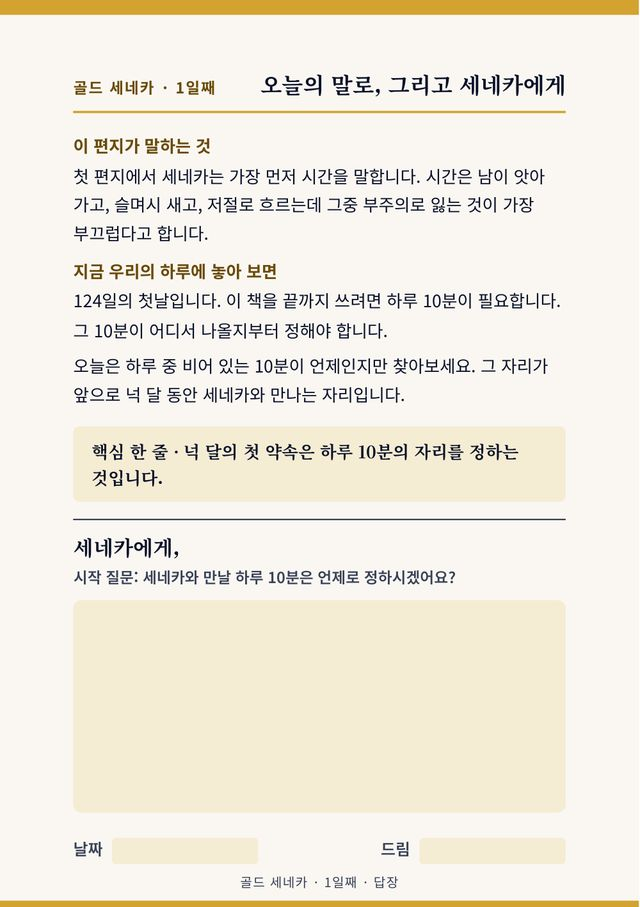
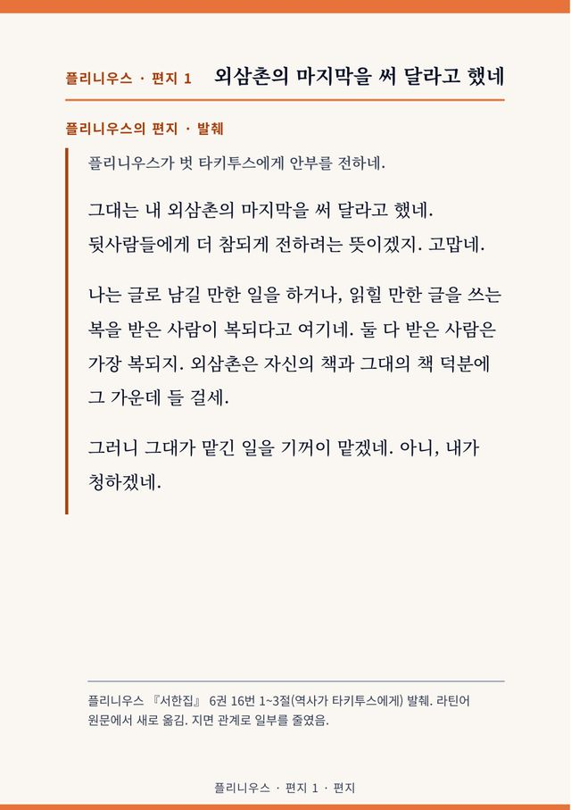
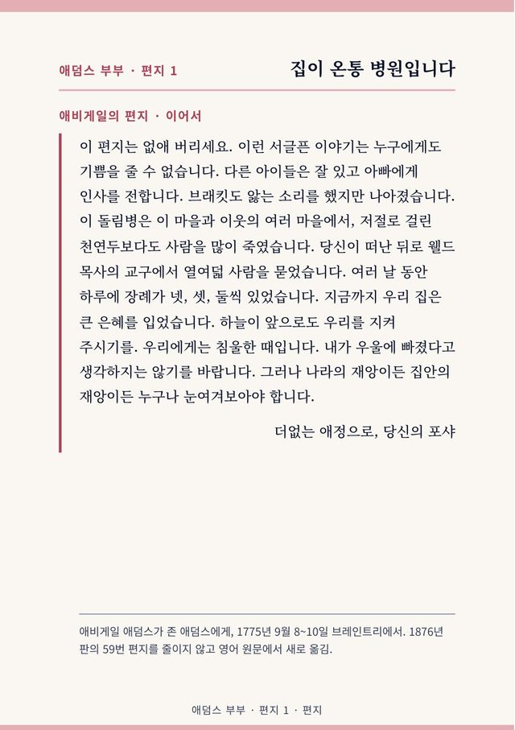
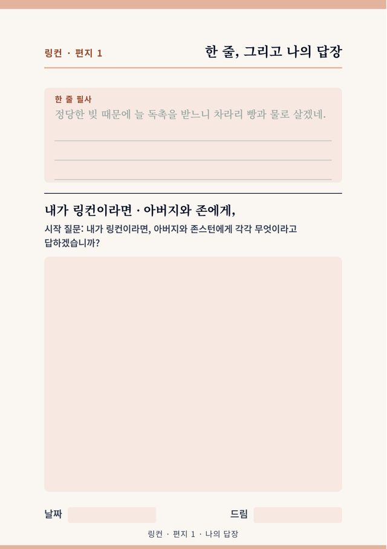

나의 시간
세네카 블루 · 『도덕 서한』 30통, 시간을 되찾는 편지
10,000원
크몽에서 보기가입도 결제도 없습니다. 일곱째 날, 내 이름이 적힌 작은 책 한 권이 남습니다.


Seven passages from Seneca, newly translated from the Latin, with pages for your reply. A free printable PDF.
Get it free시리즈마다 한 쪽씩 골랐습니다. 편지, 오늘의 말로 쓴 풀이, 답장 칸이 이어집니다.





우리 책에 실린 실제 문장입니다.
오늘을 단단히 쥔다면 내일에 덜 기대게 될 걸세.세네카, 『도덕 서한』 1번 · 「나의 시간」
우리는 실제보다 상상 속에서 더 자주 괴로워하지.세네카, 『도덕 서한』 13번 · 「일곱 밤의 편지」
다시 말하지만, 낙심이 자네를 갉아먹도록 두지 말게.링컨, 조지 래섬에게 1860년 7월 22일 · 「일하는 것만이 치료다」
참는 것은 내가 새로 배울 것도 없는 공부이니 당신의 때를 기다릴 수 있습니다.애비게일 애덤스, 존에게 1775년 9월 16일 · 「나의 가장 사랑스러운 벗에게」
과일은 철이 끝나 갈 무렵이 가장 달지.세네카, 『도덕 서한』 12번 · 「일곱 밤의 편지」
밤에는 무섭던 형체가 날이 밝으면 사라지네.세네카, 『도덕 서한』 104번 · 「나의 시간」
두려움은 대개 분장일세.세네카, 『도덕 서한』 24번 · 「124일의 답장」
그대가 잘 지내면 됐네. 나는 잘 지내네.로마 편지의 옛 첫머리 인사 · 「잘 지내나, 소식 좀 주게」
휴대폰·PC로 쓰는 판과 펜·종이로 쓰는 판을 함께 드립니다. 크몽에서 판매 중인 책은 단추를 누르면 사는 곳으로 갑니다. 다른 책은 판매처 심사가 끝나는 대로 안내합니다.
세네카가 벗과 어머니에게 보낸 글. 바쁜 하루에서 내 시간을 다시 붙잡고 싶은 분께.
현존 『도덕 서한』 124통을 발췌·요약해 하루 한 통씩 넉 달. 긴 호흡으로 꾸준히 쓰고 싶은 분께.

1~31번 편지
7,000원

32~62번 편지
7,000원

63~93번 편지
7,000원

94~124번 편지
7,000원

124통 전체 구성, 쓰는 책과 읽는 책
17,000원
조카가 남긴 베수비오 화산의 기록과 삼촌의 『박물지』. 역사와 기록을 좋아하는 분께.

첫째 · 화산의 날과 삼촌
10,000원

둘째 · 황제 트라야누스와의 문답
10,000원

셋째 · 벗과 가족에게 보낸 짧은 편지
10,000원

넷째 · 삼촌의 『박물지』에서 고른 대목
10,000원

네 권을 한 권으로 읽는 책
15,000원
미국 독립 혁명기에 부부가 주고받은 편지 21통. 떨어져 지내는 가족에게 마음을 전하고 싶은 분께.

쓰는 책 · 읽는 책 · 둘을 묶은 합본
10,000원부터
돈과 일에 관한 편지 22통, 1달러마다 1달러. 돈과 일을 대하는 태도를 돌아보고 싶은 분께.

쓰는 책 · 읽는 책 · 둘을 묶은 정본
10,000원부터
Printable PDF workbooks in two sizes, US Letter and A4. New translations made directly from the Latin; Lincoln and the Adamses in their own words. See the English page.
Letters in their original English words, with a short guide and a page for your reply.

Abraham Lincoln's letters on money and work
US$6.99
Buy printable PDF
John and Abigail Adams, 1775–1777
US$6.99
Buy printable PDFNew translations made directly from the Latin.

Seneca Blue · thirty letters
US$6.99
Buy printable PDF
Seneca Red · twenty-one readings on anger
US$6.99
Buy printable PDF
Seneca Purple · seven letters
US$4.99
Buy printable PDF
Seneca Green · seven passages
US$4.99
Buy printable PDFSelections and summaries covering all 124 surviving Moral Letters, one a day.

Letters 1–31
US$6.99
Buy printable PDF
Letters 32–62
US$6.99
Buy printable PDF
Letters 63–93
US$6.99
Buy printable PDF
Letters 94–124
US$6.99
Buy printable PDF
Covers all 124 letters
US$14.99
Buy printable PDFThe nephew's account of the eruption of Vesuvius, alongside passages from his uncle's Natural History.

Book 1
US$6.99
Buy printable PDF
Book 2
US$4.99
Buy printable PDF
Book 3
US$4.99
Buy printable PDF
Book 4
US$4.99
Buy printable PDF
All four in one volume
US$6.99
Buy printable PDF글은 같고 쓰는 방법만 다릅니다. 휴대폰·PC로 쓰는 판은 답장 칸을 눌러 자판으로 쓰고, 펜·종이로 쓰는 판은 인쇄해서 손으로 씁니다.
네. 펜·종이로 쓰는 판은 집에서 인쇄해 쓰도록 만들었습니다. 산 분이 개인적으로 쓰는 범위에서 인쇄할 수 있습니다.
답장 칸 없이 편지와 풀이를 이어 읽는 판입니다. 단행본과 합본에 들어 있습니다.
책은 판매처에서 사며, 환불은 그 판매처의 규정을 따릅니다.
영어판(English editions)은 Payhip에서 해외 카드와 PayPal로 살 수 있습니다. 아래 English Editions 서가와 English page를 보세요.
글은 같고 쓰는 방법만 다릅니다. 휴대폰·PC로 쓰는 판은 답장 칸을 눌러 자판으로 씁니다. 펜·종이로 쓰는 판은 줄이 그어진 판이라 필기 앱에서 펜으로 쓰거나 A5로 인쇄해서 씁니다. 두 파일을 함께 드립니다.
책 맨 앞 ‘이 책을 선물합니다’ 쪽에 받는 분 이름과 전하는 말을 적어 저장한 뒤 파일을 전하면 됩니다. 구매 한 번으로 한 분께 선물할 수 있습니다.
공공 영역 판본을 바탕으로 새로 옮기고 줄인 발췌입니다. 전체를 읽는 번역서가 아니라 편지를 골라 답장을 쓰는 워크북입니다.